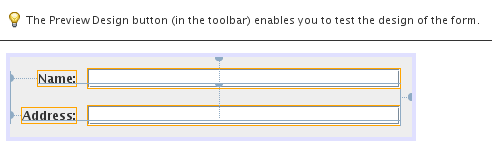
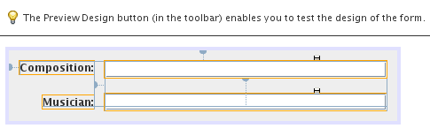

Apache NetBeans
Apache NetBeansLatest release
NetBeans Wizard Module Tutorial
| This tutorial needs a review. You can edit it in GitHub following these contribution guidelines. |
In this tutorial, you will learn how to use the main features provided by the Wizard classes of the NetBeans Dialogs API.
In NetBeans Platform applications, many different kinds of wizards can be created. If you want to create a wizard that appears in the New Project dialog, see the Project Sample Module Tutorial. If you want to create a wizard that appears in the New File dialog, see the File Template Module Tutorial. In this tutorial, you create a general wizard that appears when you click a button in the toolbar.
For troubleshooting purposes, you are welcome to download the completed tutorial source code.
Creating the Module Project
We begin by working through the New Module Project wizard. At the end of it, we will have a basic source structure, with some default files, that every NetBeans module requires.
-
Choose File > New Project (Ctrl+Shift+N). Under Categories, select NetBeans Modules. Under Projects, select Module. Click Next.
-
In the Name and Location panel, type
DemoWizardin the Project Name field. Change the Project Location to any directory on your computer. Click Next.
-
In the Basic Module Configuration panel, type
org.demo.wizardin Code Name Base. Click Finish.
The IDE creates the DemoWizard project. The project contains all of your sources and project metadata, such as the project’s Ant build script. The project opens in the IDE. You can view its logical structure in the Projects window (Ctrl-1) and its file structure in the Files window (Ctrl-2).
Creating the Wizard Infrastructure
In this section, we use the Wizard wizard to add the stubs of a wizard to our module.
-
In the Projects window, right-click the DemoWizard project node, choose New | Other, and then choose Module Development | Wizard. Click Next.
-
In the Wizard Type panel, type 2 in the "Number of Wizard Panels" field, and leave the other values unchanged:
The fields in the panel above are as follows:
-
Registration Type. Determines where the user will access the wizard. If you select "Custom", the Wizard wizard will create a new action class that you can use to open and initialize your wizard. If you select "New File", the Wizard wizard will register your wizard in the module’s
layer.xmlfile. -
Wizard Step Sequence. Determines whether the wizard will be linear or whether the user of the wizard will be able to skip wizard steps, depending on choices made earlier in the wizard. Linear wizards are 'Static', which is the default, while wizards with skippable steps require a custom iterator class, which is created if you select 'Dynamic'. (For details on dynamic wizards, see How to Create a Dynamic Wizard.)
-
Number of Wizard Panels. Determines the number of wizard panels that will be created. For each wizard step, two Java files will be created—a view and a controller.
Click Next.
-
In the Name and Location panel, type
Demoin the Class Name Prefix and select the main package from the Package drop-down list:
Click Finish.
In the Projects window, you should now see this:
Read through the NetBeans wizard javadoc in the NetBeans Dialogs API and compare the classes generated above to the classes described in the javadoc, which will prepare you for the next sections.
Registering the Wizard Action Class
In this section, we modify the generated Action class and register it in the central registry.
-
Open the
DemoWizardAction.javafile and notice that it consists of the following:
package org.demo.wizard;
import java.awt.Component;
import java.awt.event.ActionEvent;
import java.awt.event.ActionListener;
import java.text.MessageFormat;
import java.util.ArrayList;
import javax.swing.JComponent;
import org.openide.DialogDisplayer;
import org.openide.WizardDescriptor;
// An example action demonstrating how the wizard could be called from within
// your code. You can move the code below wherever you need, or register an action:
// @ActionID(category="...", id="org.demo.wizard.DemoWizardAction")
// @ActionRegistration(displayName="Open Demo Wizard")
// @ActionReference(path="Menu/Tools", position=...)
public final class DemoWizardAction implements ActionListener {
@Override
public void actionPerformed(ActionEvent e) {
List<WizardDescriptor.Panel<WizardDescriptor>> panels = new ArrayList<WizardDescriptor.Panel<WizardDescriptor>>();
panels.add(new DemoWizardPanel1());
panels.add(new DemoWizardPanel2());
String[] steps = new String[panels.size()];
for (int i = 0; i < panels.size(); i++) {
Component c = panels.get(i).getComponent();
// Default step name to component name of panel.
steps[i] = c.getName();
if (c instanceof JComponent) { // assume Swing components
JComponent jc = (JComponent) c;
jc.putClientProperty(WizardDescriptor.PROP_CONTENT_SELECTED_INDEX, i);
jc.putClientProperty(WizardDescriptor.PROP_CONTENT_DATA, steps);
jc.putClientProperty(WizardDescriptor.PROP_AUTO_WIZARD_STYLE, true);
jc.putClientProperty(WizardDescriptor.PROP_CONTENT_DISPLAYED, true);
jc.putClientProperty(WizardDescriptor.PROP_CONTENT_NUMBERED, true);
}
}
WizardDescriptor wiz = new WizardDescriptor(new WizardDescriptor.ArrayIterator<WizardDescriptor>(panels));
// {0} will be replaced by WizardDesriptor.Panel.getComponent().getName()
wiz.setTitleFormat(new MessageFormat("{0}"));
wiz.setTitle("...dialog title...");
if (DialogDisplayer.getDefault().notify(wiz) == WizardDescriptor.FINISH_OPTION) {
// do something
}
}
}-
At the top of the Action class, notice that some Action annotations have been commented out. Remove the comments and add a category and a position, so that the annotations are as follows:
@ActionID
(category="Demo", id="org.demo.wizard.DemoWizardAction")
@ActionRegistration(displayName="Open Demo Wizard")
@ActionReference(path="Menu/Tools", position=10)When the module is compiled, you will find a " generated-layer.xml " file, if you switch to the Files window and look in the build/classes/META-INF folder, as shown below:
The generated-layer.xml file provides contributions to the NetBeans central registry (also known as the 'system filesystem'), where fixed folders (such as "Actions" and "Menu") provide placeholders for the registration of the content of menubars, toolbars, and many other NetBeans Platform features. For details, see DevFaqSystemFilesystem.
-
Run the module. The application starts up and you should see your menu item where you specified it to be in the annotation above:
Click the menu item and the wizard appears:
Click Next and notice that in the final panel the Finish button is enabled:
Now that the wizard infrastructure is functioning, let’s add some content.
Designing the Wizard Content
In this section, we add content to the wizard and customize its basic features. For purposes of this example, we imagine that we are creating a wizard in a music application.
-
Open the
DemoWizardAction.javafile and notice that you can set a variety of customization properties for the wizard:
Read about these properties here.
-
In
DemoWizardAction.java, changewizardDescriptor.setTitleto the following:
wiz.setTitle("Music Selection");-
Open the
DemoVisualPanel1.javafile and theDemoVisualPanel2.javafile and use the "Matisse" GUI Builder to add some Swing components, such as the following:

For code later in this tutorial to work, you need to set the name of the JTextFields above to nameField and addressField .

Above, you see DemoVisualPanel1.java file and the DemoVisualPanel2.java , with some Swing components.
-
Open the two panels in the Source view and change their
getName()methods to "Name and Address" and "Musician Details", respectively.
1. Run the module again. When you open the wizard, you should see something like this, depending on the Swing components you added and the customizations you provided:
The image in the left sidebar of the wizard above is set in the DemoWizardAction.java file, like this:
wiz.putProperty(WizardDescriptor.PROP_IMAGE, ImageUtilities.loadImage("org/demo/wizard/banner.PNG", true));Now that you have designed the wizard content, let’s add some code for processing the data that the user will enter.
Processing User Data
In this section, you learn how to pass user data from panel to panel and how to display the results to the user when Finish is clicked.
-
In the
WizardPanelclasses, i.e., inDemoWizardPanel1.javaand inDemoWizardPanel2.java, use thestoreSettingsmethod to retrieve the data set in the visual panel.
For example, start by creating getters in the DemoVisualPanel1.java file:
public JTextField getNameField(){
return nameField;
}
public JTextField getAddressField(){
return addressField;
}Then access the above from the DemoWizardPanel1.java file:
@Override
public void storeSettings(WizardDescriptor wiz) {
wiz.putProperty("name", getComponent().getNameField().getText());
wiz.putProperty("address", getComponent().getAddressField().getText());
}-
Next, use the
DemoWizardAction.javafile to retrieve the properties you have set and do something with them:
if (DialogDisplayer.getDefault().notify(wiz) == WizardDescriptor.FINISH_OPTION) {
String name = (String) wiz.getProperty("name");
String address = (String) wiz.getProperty("address");
DialogDisplayer.getDefault().notify(new NotifyDescriptor.Message(name + " " + address));
}The NotifyDescriptor can be used in other ways too, as indicated by the code completion box:
You now know how to process data entered by the user.
Validating User Data
In this section, you learn how to validate the user input when "Next" is clicked in the wizard.
-
In
DemoWizardPanel1, change the class signature, implementingWizardDescriptor.ValidatingPanelinstead ofWizardDescriptor.Panel:
public class DemoWizardPanel1 implements WizardDescriptor.ValidatingPanel<WizardDescriptor>-
Implement the required abstract method that throws a
WizardValidationExceptionlike this:
@Override
public void validate() throws WizardValidationException {
String name = component.getNameField().getText();
if (name.equals("")){
throw new WizardValidationException(null, "Invalid Name", null);
}
}-
Run the module. Click "Next", without entering anything in the "Name" field, and you should see the result below. Also, note that you are not able to move to the next panel, as a result of the validation having failed:
-
Optionally, disable the "Next" button if the name field is empty. Start by declaring a boolean at the top of the class:
private boolean isValid = true;Then override isValid() like this:
@Override
public boolean isValid() {
return isValid;
}And, when validate() is called, which is when the "Next" button is clicked, return false:
@Override
public void validate() throws WizardValidationException {
String name = component.getNameTextField().getText();
if (name.equals("")) {
isValid = false;
throw new WizardValidationException(null, "Invalid Name", null);
}
}Run the module. This time, the first time you click "Next", you’ll find that if there is no content is in the field, the "Next" button becomes disabled:
Alternatively, set the boolean to false initially. That will cause the "Next" button to be disabled when the wizard is shown. Then add a DocumentListener to the text field and, when the user types something in the field, set the boolean to true and call isValid() .
You now know how to validate data entered by the user.
For more information on validating user input, see Tom Wheeler’s sample at the end of this tutorial.
For a very simple and powerful Swing validation framework, see the Simple Validation API.
Persisting Data Across Restarts
In this section, you learn how to store the data when the wizard closes and retrieve it when the wizard opens again.
-
In
DemoWizardPanel1.java, override thereadSettingsand thestoreSettingsmethods as follows:
@Override
public void readSettings(WizardDescriptor wiz) {
component.getNameField().setText(NbPreferences.forModule(DemoWizardPanel1.class).get("namePreference", ""));
}
@Override
public void storeSettings(WizardDescriptor wiz) {
wiz.putProperty("name", getComponent().getNameField().getText());
wiz.putProperty("address", getComponent().getAddressField().getText());
NbPreferences.forModule(DemoWizardPanel1.class).put("namePreference", component.getNameField().getText());
}-
Do the same as the previous step, but this time for the
addressFieldtext field.
1. Run the module again and type a name and address in the first panel of the wizard:
-
Close the application, open the Files window, and look in the
wizard.propertiesfile within the application’sbuildfolder. You should now see settings like this:
-
Run the application again and, when you next open the wizard, the settings specified above are automatically used to define the values in the fields in the wizard.
You now know how to persist wizard data across restarts.
For more information on the NbPreferences class, used above, see the NbPreferences javadoc, as well as the NetBeans Options Window Tutorial.
Branding the Wizard
In this section, you brand the "Next" button’s string, which is provided by the wizard infrastructure, to "Advance".
The term "branding" implies customization, i.e., typically these are minor modifications within the same language, while "internationalization" or "localization" implies translation into another language. For information on localization of NetBeans modules, go here.
Branding entails overriding properties files in the NetBeans Platform. These properties files, normally referred to as "bundle properties" files, contain strings that are used in display texts, such as the texts on the buttons in the NetBeans Platform wizards. To override these bundle properties files, your module needs to be part of a NetBeans Platform application. Each NetBeans Platform application has a "branding" folder, which is where bundle properties override files are placed.
-
Make sure your NetBeans module is part of a NetBeans Platform application, rather than being a standalone module.
-
In the Files window, expand the application’s
"branding"folder and then create the folder/file structure highlighted below:
-
Define the content of the "Bundle.properties" file as follows:
CTL_NEXT=&Advance >Other strings you might like to brand are as follows:
CTL_CANCEL
CTL_PREVIOUS
CTL_FINISH
CTL_ContentNameThe key "CTL_ContentName" is set to "Steps" by default, which is used in the left panel of the wizard,if the "WizardPanel_autoWizardStyle" property has not been set to "FALSE".
-
Run the application and the "Next" button will be branded to "Advance":
Optionally, use the DemoWizardAction.java file, as described earlier, to remove the whole left side of the wizard as follows:
wiz.putProperty(WizardDescriptor.PROP_AUTO_WIZARD_STYLE, Boolean.FALSE);The above setting results in a wizard that looks as follows:
You now know how to brand the strings defined in the wizard infrastructure with your own branded versions.
Further Reading
Several pieces of related information are available on-line:
-
How to Create a Dynamic Wizard * Tom Wheeler’s NetBeans Site (click the image below):
Even though it was written for NetBeans 5.5, the above sample has been successfully tried in NetBeans IDE 6.5.1 on Ubuntu Linux with JDK 1.6.
The sample is especially useful in showing how to validate user data.
-
Geertjan’s Blog:
-
How Wizards Work: Part 5—Reusing and Embedding Existing Panels